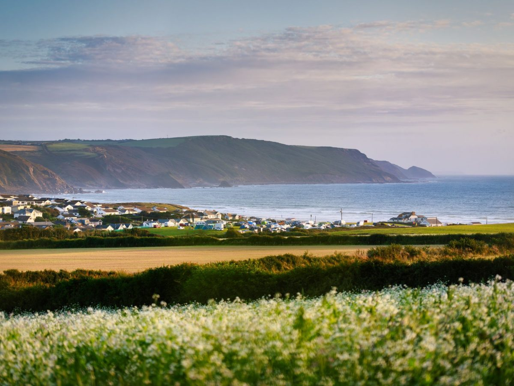

The Estate & Beyond
Outdoor
Adventures
450 acres of working farm, ancient woodland, and coastal Cornwall on your doorstep. From estate trails at dawn to surf at Widemouth Bay by afternoon.
Acres of estate
To Bude & the coast
South West Coast Path
Activities nearby
On the Estate
Step outside your door
Whalesborough is a living farm — not a manicured resort park. Our 450 acres of working pasture, ancient hedgerows, and managed woodland are yours to explore from the moment you arrive.
Estate Walking Trails
Three waymarked routes wind through the estate — from the gentle Meadow Loop (1.2 miles) to the longer Woodland Ridge walk (3.4 miles) taking in sweeping views towards the Atlantic. Maps are available from reception.
All levelsFarm Animal Encounters
Whalesborough is a working farm with cattle, sheep, and seasonal lambing. Our team run informal morning encounters — a highlight for families and a gentle, unhurried reminder of where food really comes from.
Family favouriteOutdoor Swimming Pool
Our resort outdoor pool (17m × 8m) is heated to 26°C throughout the season. Open to all guests, it's set within the grounds with sunloungers and sheltered seating — perfect for post-walk relaxation.
Heated · SeasonalWoodland & Nature Trails
Ancient oak and ash woodland runs along the valley below the estate. Rich with birdlife — including woodpeckers, buzzards, and seasonal migrant warblers — it's an exceptional spot for wildlife watching at any time of year.
Birdwatching · NatureOpen-Air Games & Lawns
Croquet, giant garden chess, badminton, and space to simply throw a ball around — the estate lawns give guests room to breathe and play. Equipment is available to borrow from reception.
All agesCycling from the Estate
The Tarka Trail and Camel Trail — two of Britain's finest traffic-free cycling routes — are within easy reach. Bike hire is available in Bude (3 miles). The estate itself has quiet farm lanes suitable for a morning spin.
Hire nearby
3 Miles from the Estate
Bude & the North Cornwall Coast
The North Cornwall coast is one of England's finest — and you're right in the middle of it. Widemouth Bay sits just south of Bude, a wide open Atlantic beach beloved by surfers of all levels. Bude itself has the Canal, sea pools, and a quietly brilliant food and drink scene.
- Widemouth Bay surf school3 mi
- Bude Sea Pool (tidal, free entry)3.5 mi
- Bude Canal & towpath walk3 mi
- Crackington Haven sea cliffs6 mi
- Tintagel Castle (King Arthur)18 mi
Further Afield
Beyond the estate
Surfing at Widemouth Bay
A wide, south-facing bay with consistent Atlantic swells and a gentler break than nearby Newquay — ideal for beginners. Multiple RNLI-patrolled surf schools operate from the beach throughout the summer season. Boards and wetsuits available to hire.
Bude Sea Pool
One of England's last surviving tidal swimming pools, carved from the Atlantic rocks in the 1930s. Free to use, naturally refilled with each tide, and with stunning views of Summerleaze Beach. A Cornwall institution.
South West Coast Path
The 630-mile South West Coast Path passes through this stretch of North Cornwall, offering day sections of extraordinary beauty. The Bude to Boscastle section (12 miles) is particularly dramatic, passing Crackington Haven's towering 400-ft cliffs.
Roadford Lake Watersports
Devon's largest reservoir hosts kayaking, paddleboarding, sailing, and windsurfing tuition through the Roadford Lake Activity Centre. A superb wet-weather option with a full programme of sessions for families and solo guests.
Horse Riding
Eastcott Riding Centre near Holsworthy offers hacks across Cornish moorland and coastal farmland. Guided rides for all abilities including complete beginners, with the option of beach rides at certain times of year.
Kayaking & Paddleboarding
The Bude Canal and sheltered coastal inlets around Crooklets and Summerleaze are ideal for kayaking and SUP in calm conditions. Local hire operators run half-day and full-day sessions, including guided sea cave tours for the more adventurous.
After the Adventure
Recover in the W Club Spa
A long coastal walk or a surf session deserves a proper ending. The W Club Spa — with its indoor thermal pool at 29–30°C, sauna, steam room, and full treatment menu — is designed precisely for that.
Discover the SpaReady to explore?
450 acres of North Cornwall is waiting. Book your stay and let us help you plan the perfect balance of adventure and relaxation.